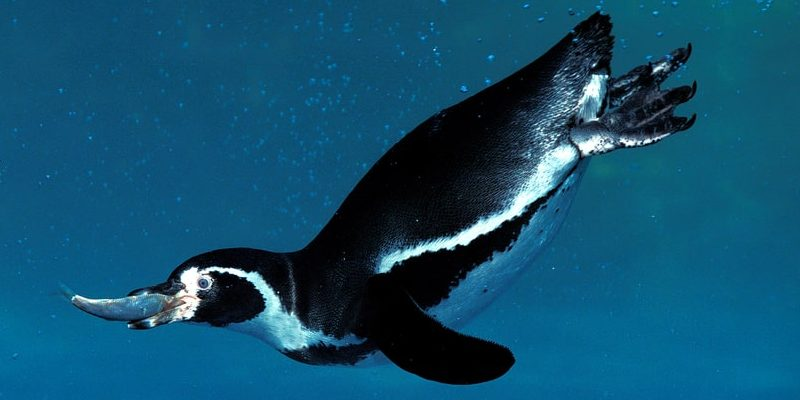

Pinguino
Los pingüinos son aves marinas no voladoras que viven casi exclusivamente por debajo del
ecuador.
Algunos habitantes de las islas se pueden encontrar en climas más cálidos, pero la mayoría,
incluido el pingüino emperador, el pingüino barbijo, el pingüino de adelia y el pingüino papúa,
residen en y alrededor de la Antártida helada. Su gruesa capa de grasa y plumas aceitosas
apretadas son ideales para temperaturas más frías.
Las 18 especies diferentes de pingüinos pueden variar en forma y tamaño, pero todas tienen
cuerpos negros y vientres blancos. Este contrasombreado protector les permite esconderse de
depredadores como focas leopardo y orcas mientras nadan.
Si bien los pingüinos no pueden volar, sus aletas rígidas, patas palmeadas y forma elegante los
convierten en expertos nadadores. De hecho, pasan la mayor parte de su vida en el océano y hacen
casi toda su caza de kril, calamares y cangrejos bajo el agua. Pueden nadar a unos 24 kilómetros
por hora, y cuando quieren ir más rápido, a menudo hacen marsopas o saltan fuera del agua
mientras nadan.
imagen

Caracteristicas
Los pingüinos se caracterizan, a grandes rasgos, por lo siguiente:
- Como todas las aves, son bípedos, pero carecen de vuelo. Sus
alas,
adaptadas para la natación, poseen huesos comprimidos y sólidos, con articulaciones rígidas,
y sus patas se ubican más atrás de lo usual, para permitirles estar de pie en lo seco, y
también actuando como timones bajo el agua. La forma general de su cuerpo es hidrodinámica,
aunque presentan un tamaño muy variable.
- Los pingüinos son excelentes nadadores, capaces de alcanzar
velocidades de hasta 60 kmph y de contener la respiración hasta por 18 minutos, en algunas
especies. La mayor parte de su tiempo lo pasan sumergidos, pero emergen para reproducirse y
desovar.
- El plumaje de los pingüinos consta de tres capas distintas, de
colores blancos y negros y otros rasgos variables según la especie, pero también poseen una
gruesa capa de grasa bajo la piel para aislar el calor corporal del agua y aire helados de
la Antártida.
- Se comunican mediante graznidos, con un nivel de especificidad tal
que pueden reconocerse unos a otros en medio de ruidosas y atestadas colonias.
- Son animales sociables, formadores de extensas colonias y célebres
por su monogamia. En diversas culturas ocupan un lugar de simpatía, considerados en
occidente como animales exóticos.
Donde habitan los pinguinos?
Los pingüinos son habitantes casi exclusivos del hemisferio sur del planeta, excepto por las
especies adaptadas a la vida ecuatorial en las Islas Galápagos (Ecuador).
Las especies ubicadas en el continente antártico representan el 80% de la biomasa de la región,
aunque en épocas de apareamiento pueden migrar a latitudes mucho más cálidas. Actualmente
existen colonias de pingüinos en las costas de Nueva Zelanda, Antártida, Argentina, Chile, Perú,
Suráfrica, la región sur de Australia y las islas subantárticas.
¿Qué comen los pingüinos?

Dieta de los pinguinos
La dieta de los pingüinos consiste fundamentalmente en peces y cefalópodos que cazan en sus
inmersiones, excepto algunas especies adaptadas a la ingesta de zooplancton y pequeñísimos
crustáceos. Los pingüinos poseen una glándula especializada, compartida con la mayoría de las
especies marinas, que les permite eliminar el exceso de sal por ingerir agua de mar, por lo que
no necesitan ingerir agua dulce.